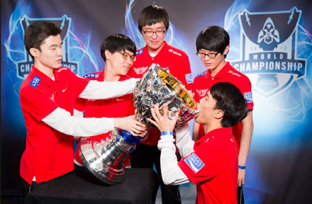
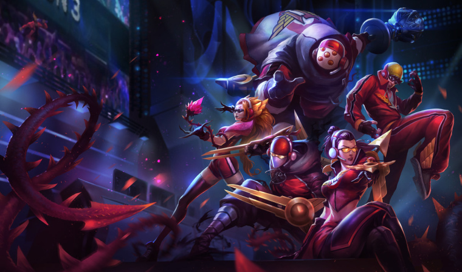
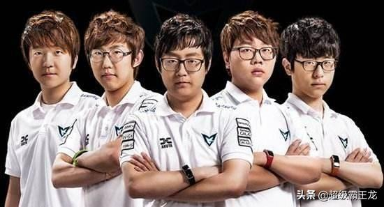
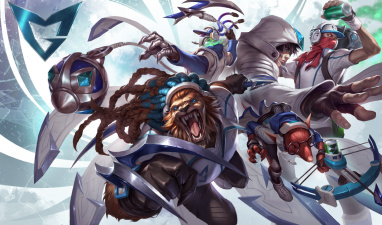
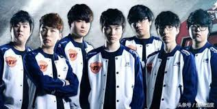
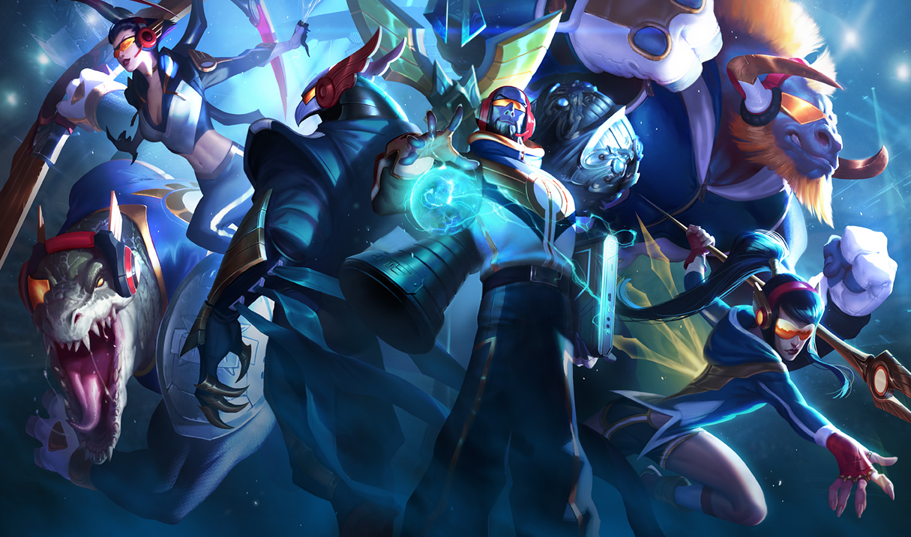
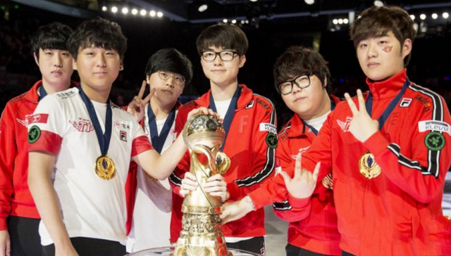
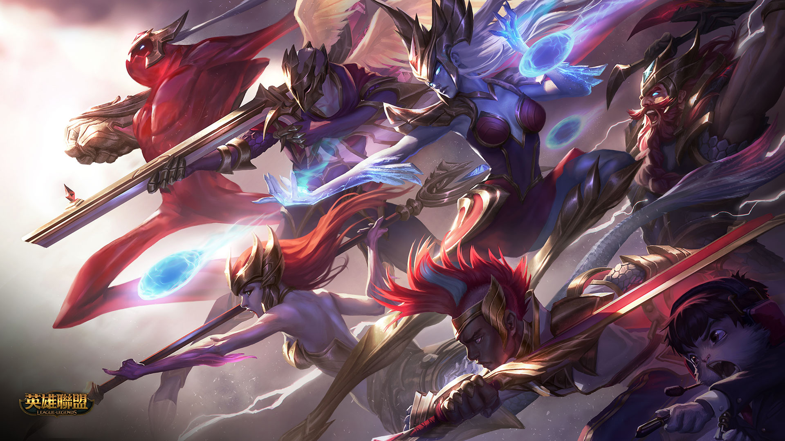

英雄聯盟S系列賽
英雄聯盟S系列賽2013-2016冠軍隊伍
上路Impact.打野Bengi.中路Faker.下路Piglet.輔助poonmandu
SKT在S3賽季開打時引進了新秀中路Faker，由於這位新秀中路實力過人因此SKT在當時可以說是稱霸韓國職業賽，當然英雄聯盟的選手目標只有一個，就是拿S系例賽冠軍，因此每年的夏季季後賽就是決定性的時刻，當年SKT其中一個代表韓國隊出賽的就是SKT， SKT在S3大賽前面的比賽雖然都有順利贏下但是比較沒打出亮點，直到總決賽對上RYL才發威，原本大家以為這會是一場激烈的比賽，但卻是SKT3:0輾壓獲勝，並拿下他們英雄聯盟戰隊隊史第一冠。
賈克斯.李星.劫.汎.枷蘿
上路Looper.打野DanDy.中路Pawn.下路imp.輔助Mata
SSW是一支打法極為恐怖的隊伍，在韓職聯賽時其實他們與其他隊伍相比起來就是強那一點而已，可是到了S系列賽資格搶奪的時候對上SKT真的是凸顯出他們的野心，首先SSW和SKT在打門票大賽，誰贏誰出國，當時以常理來說 SKT好歹也是去年冠軍，即使對上目前戰績名列前茅的SSW應該也不是完全沒機會，但事實就是真的沒機會，光是中路的Pawn就單殺Faker數次，再加上比分3:0輾壓，雙重打擊重創SKT，可是當時的SKT也算是實力堅強的一對，結果 再遇上SSW一樣是被瓦解，因此SKT無法出國，是由SSW奪下門票，世界賽中的SSW展現出及高輾壓力，他們的打法和傳統隊伍戰術性打法不一樣，因為他們單以實力方面就贏過這次S系列賽裡的所有對手，每一路都明顯實力過人，所以 跟他們打的隊伍幾乎沒有一場能對抗的，他們不僅奪冠，而且還是當時平均一場遊戲時間最短的隊伍，因為他們很多場次僅需20分鐘左右就解決對手，整個世界賽也只輸了兩場，被當時的觀眾稱為最強的一屆冠軍。
辛吉德.雷葛爾.塔隆.圖奇.瑟雷希
上路Marin.打野Bengi.中路Faker.下路Bang.輔助Wolf
S系列賽來到第五屆，熟悉的SKT又回到世界舞台，SKT基本上是捲土重來，因為在S4賽季結束後的賽制關係，當時的SKT.K隊和SKT.S隊結合，因此重組成現在的SKT陣容，SKT在S4失利後重新為道場上，不過他們在S5季中邀請賽 上其實還有輸過一次，是輸給當時的EDG而只拿下亞軍，在面臨又一次挫敗之後這次SKT有備而來，小組賽6勝0拜晉級4強，8強賽遇上台灣隊伍AHQ3:0輾壓，4強賽上對上OG3:0輾壓，從小組賽到4強賽一路0敗晉級總決賽，讓很多人 不禁討論S5的SKT和S4的SSW哪一支隊伍比較強，有的人覺得S5的SKT戰術加上隊員實力太強而起失誤很少所以很難打，而S4的SSW則是五個打粉很兇又很強的人在前期打線就壓到別人反擊不了拚純操作實力就讓對手輸掉，兩隊是不一樣的 ，SKT唯一一敗就是冠亞對上KOO輸掉一場，無法達成100%勝率奪冠應該是SKT唯一的遺憾，但同時SKT成為世界上第一支雙冠隊伍。
雷尼克頓.伊莉絲.雷茲.阿祈爾.克黎思妲.亞壢斯塔
上路Duke.打野Bengi.中路Faker.下路Bang.輔助Wolf
S6的SKT再次晉級到S系列決賽，除了上路以及替補名單有變動以外其他隊員都沒有麼變化，這次SKT在世界賽被大家認為實力不向S5那麼強，甚至有人認為SKT今年不會再奪冠，但是SKT也不是省油的燈，一路通過 小組賽和8強賽晉級，但在4強賽的時候遇上ROX有很大的問題，因為ROX竟然異想天開拿AD角色好運姊打輔助，這個戰術明顯是拿來想針對SKT的，因為雖然這次SKT的狀態不如去年，可是能打到4強還是有一定的輾壓力 ，他們也了解用傳統陣容打SKT很痛苦所以才出奇招，這個奇招說來有效，在SKT手中拿了兩分，但後來SKT把好運姊BAN掉之後就沒辦法打了，ROX明顯只有這套特殊戰術，沒有了自然也打不贏，而冠軍賽對手則是S4 世界冠軍SSW的重組隊伍SSG，SSG一路緊咬不放，比紛來到2:2，第5場對決的前期兩隊打得相當的穩健，這場比賽關係到SKT能不能成為3冠王或是SSG重返SSW前輩的榮耀拿一次冠軍，兩隊不斷拉扯，兩邊都很謹慎，但在最後 SSG的AD Ruler 想要上去點人一個走位失誤輔助想保他反而送了頭形成4打5局面，因為這時已經大後期復活時間非常久，SKT就趁這一波攻勢拿下極大優勢，最終獲得冠軍，第三次捧杯，在當時S系列賽6界他們就足足拿了三屆， 是名副其實的傳奇隊伍。
艾克.扎克.歐拉夫.星朵拉.燼.娜米
